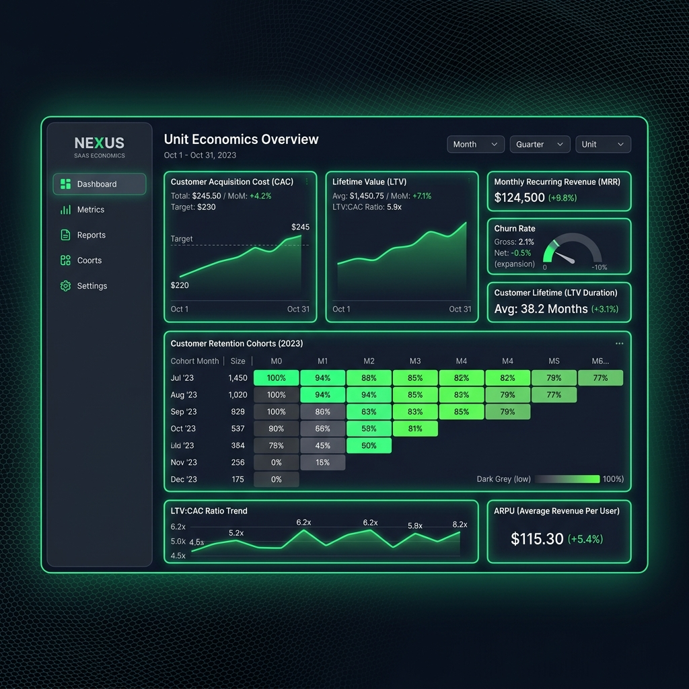

goJim B2B Dashboard User Guide
Welcome to the goJim Premium Gym Management Dashboard! This comprehensive tool allows you to seamlessly manage your entire gym operations, from member tracking to trainer assignments and CRM.
1. Executive SaaS Business KPIs
The dashboard includes a powerful section for real-time unit economics analysis to help owners evaluate marketing performance and customer value.

Key Metrics Explained:
- Marketing Ad Spend & New Members Closed: Use the interactive sliders to input your monthly marketing spend and the number of new members acquired.
- Customer Acquisition Cost (CAC): Calculated automatically by dividing the total Marketing Ad Spend by the number of New Members Closed. This shows how much it costs to acquire a single customer.
- Lifetime Value (LTV): The total predicted revenue a member will generate during their relationship with your gym.
Note on LTV: Currently, the LTV is calculated based on a fixed unit baseline formula: Average Monthly Membership (₹115) × Average Retention Span (6.0 Months). Because this relies on your gym's historical baseline averages rather than dynamic monthly inputs, the LTV remains constant at ₹690.00 while the CAC fluctuates.
- LTV to CAC Ratio: This ratio determines the health of your marketing. A ratio of 3.0x or higher indicates excellent health (you are earning 3x what you spend to acquire a member).
- Retention Cohorts Matrix: Tracks the percentage of members retained over subsequent months. High drop-off months are flagged to alert you to retention issues.
2. Role Switching
At the bottom of the left sidebar, you will find a Role Switcher widget. This allows you to view the dashboard from different perspectives based on your staff permissions:
- Gym Owner: Full access to all top-level tabs.
- Trainer: Restricted view tailored to managing clients.
- Student/Member: Restricted view to view plans and rate trainers.
3. Gym Owner View
3.1 Overview Dashboard
The default screen upon logging in. Here you will find Quick Actions, Key Metrics, and the Activity Log.
3.2 Leads CRM
Track potential new members through a Kanban-style pipeline (New Leads -> Trial Booked -> Trial Done -> Converted).
4. Trainer Management
Click on Add Trainer Profile to onboard a new staff member. On the Trainer's card, click the assigned students number to view a detailed client list.
5. Front Desk Kiosk Mode
The Kiosk Mode button launches a self-service check-in screen where members can type their phone number to check in.